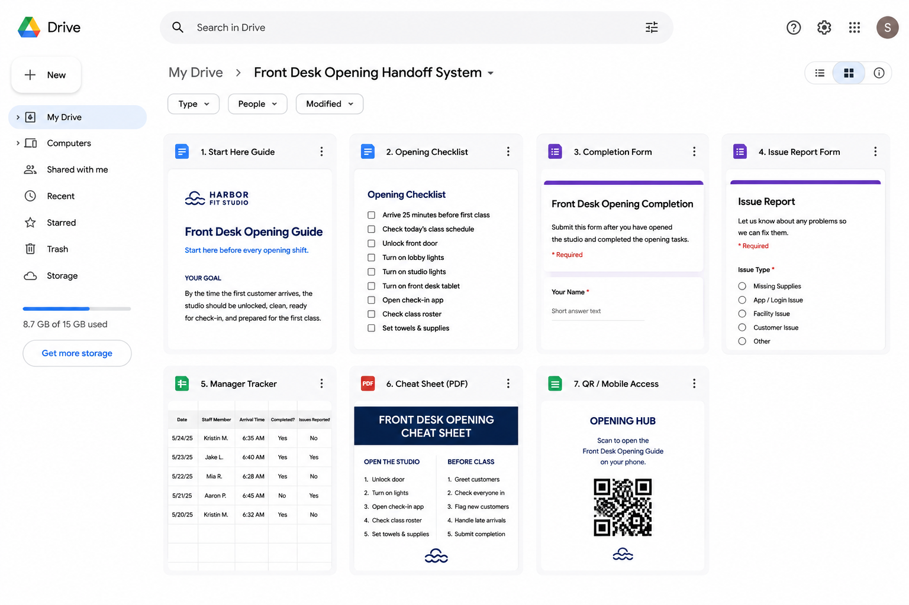

Clear guides for things that take time to explain.
I create walkthroughs, reference guides, tutorials, and training materials for products, processes, apps, and workflows.
Example guide projects
See how repeated explanations, rough processes, and scattered instructions can become clear guide packages people can actually use.
Front Desk Opening Handoff System
A sample Drive package for a small fitness studio's opening shift.
- Problem
- The owner was repeating the same opening instructions every time: when to arrive, what to check, what to turn on, and how to report issues.
- Result
- Staff get one organized folder with the guide, checklist, forms, tracker, cheat sheet, and mobile access.
- Built
- Start Here Guide · Opening Checklist · Completion Form · Issue Report Form · Manager Tracker · Cheat Sheet · QR Access
- Goal
- Make the opening shift easy to follow and easy to review.

Real project: turning a robotics component into a reference guide
The owner needed a clearer way to explain how the Morpheus Drive component worked and how interns could use it inside functional robots.
Source material on the left, organized and rewritten, lives as the reference guide on the right.
The final format depends on what people need to do.
Some projects need a PDF-style guide. Some need website-ready content. Some need a short video walkthrough. Some need a checklist or SOP. The format depends on who will use it and what they need to understand.
- Reference guide
- Step-by-step walkthrough
- SOP
- Checklist
- Training material
- Onboarding doc
- App tutorial
- Short video guide
- Presentation
How it works
-
01
Show me what needs explaining
You can send videos, notes, screenshots, old docs, or just explain the situation.
-
02
I gather context
I ask questions, review the material, and figure out what people actually need to understand.
-
03
I organize the explanation
I turn the information into a clear structure that makes sense to the person using it.
-
04
I make the guide
I create the walkthrough, reference doc, checklist, SOP, tutorial, or training material.
-
05
You review it
You check for accuracy and tell me what needs adjusting.
-
06
I polish the final version
You get a clear guide people can actually use.
Have something people need to understand?
Show me the product, process, app, role, workflow, or explanation you need turned into a guide. I'll help figure out the clearest format and what information we need to make it useful.